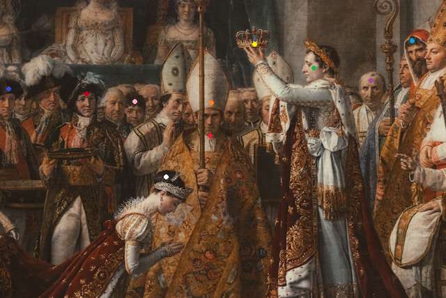

<!DOCTYPE html>
<html lang="en">
<head>
  <meta charset="UTF-8">
  <title>Maal</title>
  <link rel="stylesheet" href="MaalStyle.css">
</head>
<body>

</body>
<h1>Josephine kroonimine</h1>
<h3>Hiire klik teatud inimese peal</h3>


<map name="Maal">

  <area shape="circle" coords="461,94,40" href="Napoleon.html" alt="Napoleon">

  <area shape="circle" coords="238,274,35" href="Josephine.html" alt="Josephine">

  <area shape="circle" coords="300,173,25" href="PopePiusVII.html" alt="PopePiusVII">

  <area shape="poly" coords="267,121,297,74,326,118" href="PopeHat.html" alt="PopeHat">

  <area shape="rect" coords="340,47,387,67" href="Crown.html" alt="Crown">

  <area shape="circle" coords="532,134,30" href="Charles.html" alt="Charles">

  <area shape="circle" coords="125,147,20" href="Joseph.html" alt="Joseph">

  <area shape="circle" coords="11,151,15" href="Louis.html" alt="Louis">

  <area shape="circle" coords="594,82,20" href="Raphael.html" alt="Raphael">

  <area shape="circle" coords="193,165,10" href="Eugene.html" alt="Eugene">
</map>

<div id="ala">
  Napoleon I ehk Napoleon Bonaparte (prantsuse keeles Napoléon I Bonaparte; 15. august 1769 Ajaccio, Korsika – 5. mai 1821 Saint Helena saar) oli Prantsusmaa valitseja ja väejuht.
</div>

</html>